The Hitchhiker's Guide to Whonix
Whonix is a desktop operating system designed to provide its users with enhanced security and privacy. Its security features protect its users from malware, DNS Leaks, censorship, and surveillance.
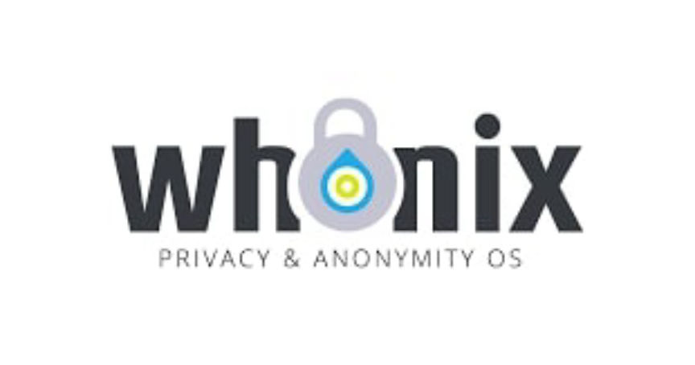
Whonix is a Linux distribution made up of two Virtual Machines: The Whonix Workstation and the Whonix Gateway.
The Whonix Workstation is where the user conducts their operations, while the Whonix Gateway is the VM that establishes a connection to the Tor network and forces all connections to the internet to go through the Tor network.
To provide its users with anonymity online, Whonix uses Tor. The Tor network is designed to provide anonymity by passing traffic through a network of relays. This ensures that third parties such as your ISP cannot know what sites you visit. The sites you visit can also not know your location since your real IP is not visible to them. Whonix makes sure every connection you make to the internet goes through Tor, while connections that fail to go through Tor are blocked.
Whonix comes with pre-installed and safely pre-configured applications. Its users are, therefore, able to use it without making changes. Whonix also allows its users to customize and install additional applications and use them anonymously.
Since the Whonix Workstation runs on an isolated network it does not know the user's real IP address. This means that the user is protected from leaks that may result from the user's mistakes or applications that may fail to function properly.
Whonix runs like an app installed on a host OS. The host OS is the OS installed on your device.
In this guide, we'll look into how you can install and use Whonix on a Windows PC.
Go here and download Whonix for your Windows PC.
You can find Whonix for other platforms on the official download page.
To run Whonix's VMs we need a virtualizer. Go here to download VirtualBox.
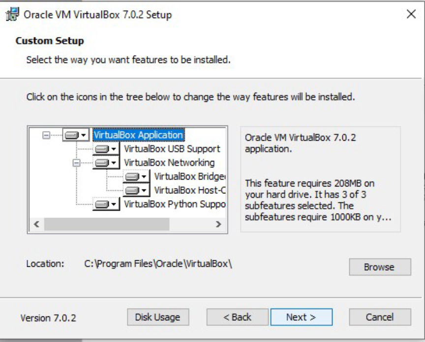
Install the application after the download finishes.
Import Whonix into VirtualBox
Open once the installation completes, click on the "Import" tab.
Navigate to where your Whonix OVA is located, select it, and click on "Next".
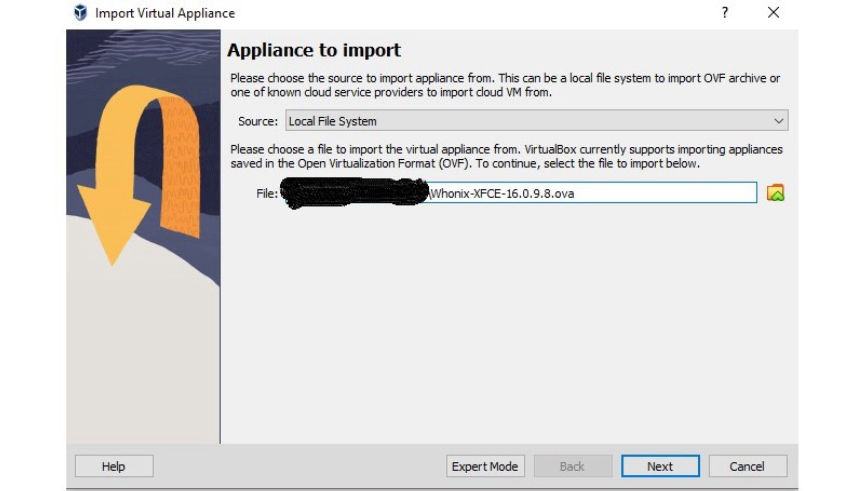
Click on "Import" without making any changes.
Next, press "Agree" on the pop-ups that appear and wait for the importation to complete.
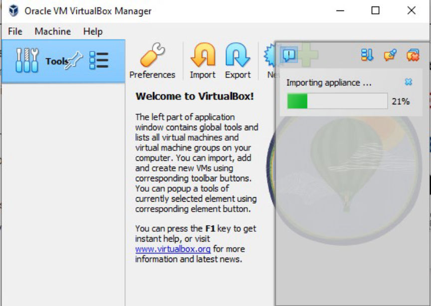Complete Importation/img]
[sub]Start Whonix
To run Whonix you must first start VirtualBox.
Select Whonix-Gateway and click on the "Start" button.
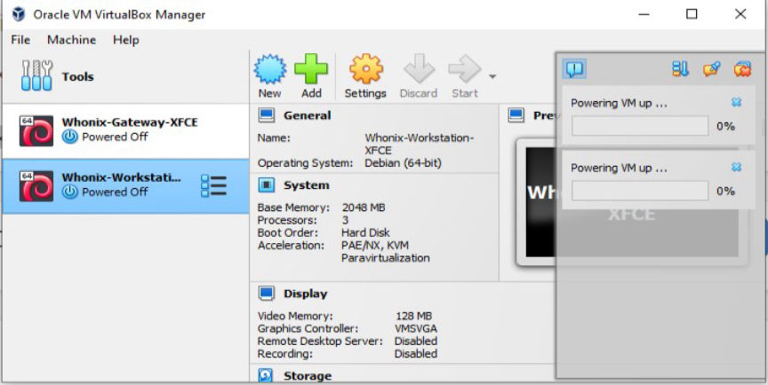
Select Whonix-Workstation and click on the "Start" button.
After it starts and you accept the terms, the Gateway will ask you to connect to Tor.
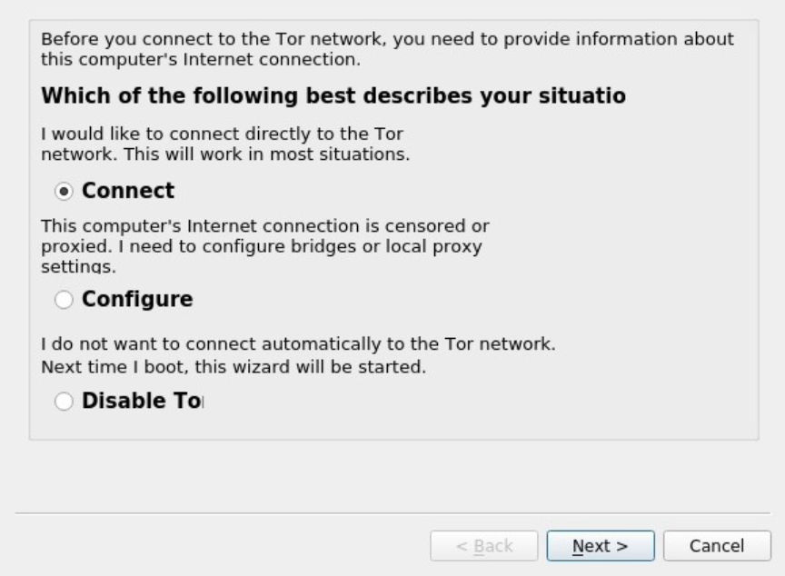
Click on Next on the two windows that follow and wait for the connection to complete.
Once Tor starts running a system check will be initiated. Click the OK button on the message that appears after the check.
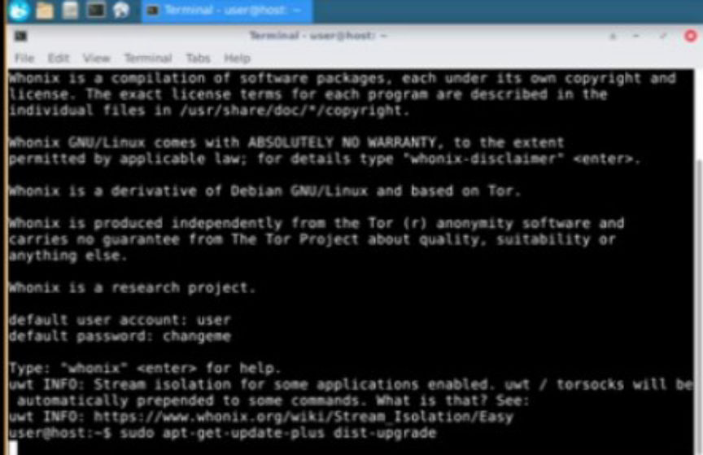
Open the Terminal Emulator and type, sudo apt-get update && sudo apt-get upgrade into the terminal and press Enter.
When prompted for a password type, changeme and press Enter.
Just as you did at the Gateway, open the Terminal Emulator and type, sudo apt-get update && sudo apt-get upgrade into the terminal and press Enter.
When prompted for a password type, changeme and press Enter.
After the updates are done, reboot the VMs. Always start the Gateway first.
After the gateway has connected to the Tor network, go to the workstation and open the browser.
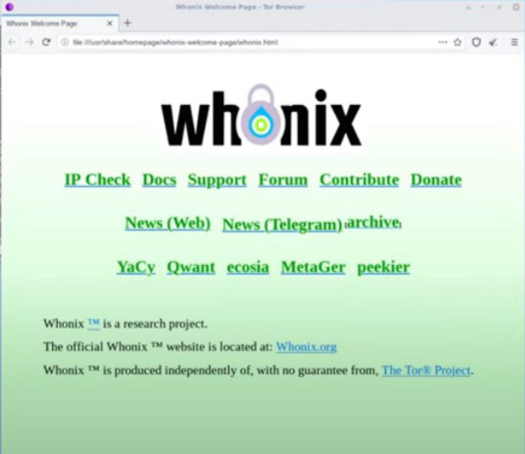
Click on the IP Check button to check if the Browser is connected to Tor and your IP is hidden.
The Gateway's functions are to run Tor and act as a firewall. You should carry out all of your activities at the Workstation.
Whonix's basic setup would provide sufficient security to most users. Whonix, however, does not protect you if, your hardware, physical machine, or firmware is compromised, you use weak passwords or fail to use encryption.
For increased security, you may want to harden both Whonix and VirtualBox.
Keep your Gateway and Workstation updated by regularly running system checks.
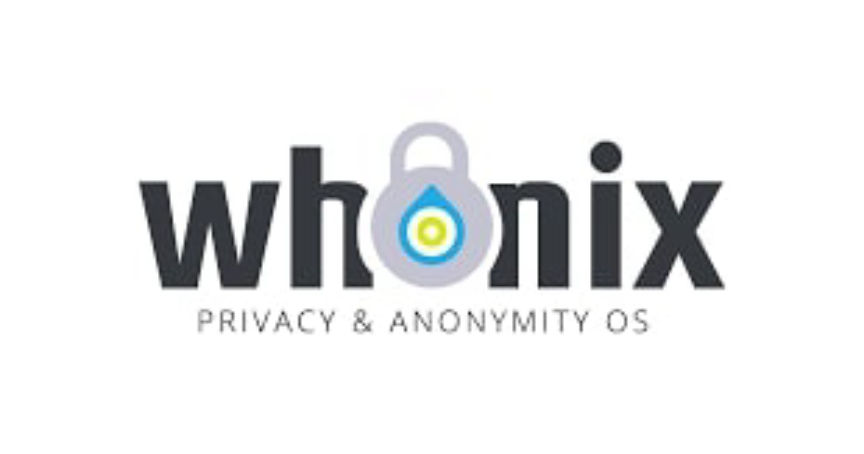
Whonix is a Linux distribution made up of two Virtual Machines: The Whonix Workstation and the Whonix Gateway.
The Whonix Workstation is where the user conducts their operations, while the Whonix Gateway is the VM that establishes a connection to the Tor network and forces all connections to the internet to go through the Tor network.
To provide its users with anonymity online, Whonix uses Tor. The Tor network is designed to provide anonymity by passing traffic through a network of relays. This ensures that third parties such as your ISP cannot know what sites you visit. The sites you visit can also not know your location since your real IP is not visible to them. Whonix makes sure every connection you make to the internet goes through Tor, while connections that fail to go through Tor are blocked.
Whonix comes with pre-installed and safely pre-configured applications. Its users are, therefore, able to use it without making changes. Whonix also allows its users to customize and install additional applications and use them anonymously.
Since the Whonix Workstation runs on an isolated network it does not know the user's real IP address. This means that the user is protected from leaks that may result from the user's mistakes or applications that may fail to function properly.
Whonix runs like an app installed on a host OS. The host OS is the OS installed on your device.
In this guide, we'll look into how you can install and use Whonix on a Windows PC.
Download Whonix
Go here and download Whonix for your Windows PC.
You can find Whonix for other platforms on the official download page.
Download and Install VirtualBox
To run Whonix's VMs we need a virtualizer. Go here to download VirtualBox.
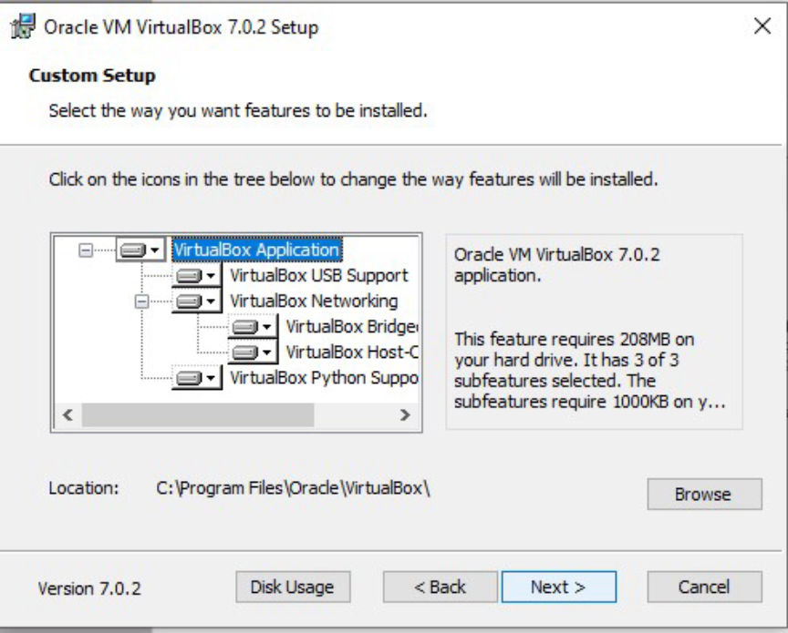
Install VirtualBox
Install the application after the download finishes.
Import Whonix into VirtualBox
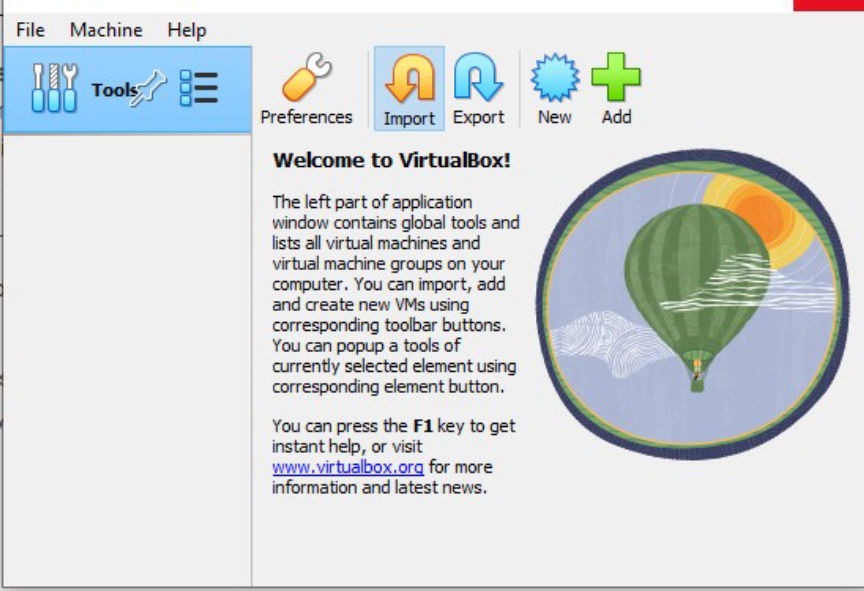
Click on Import
Open once the installation completes, click on the "Import" tab.
Navigate to where your Whonix OVA is located, select it, and click on "Next".
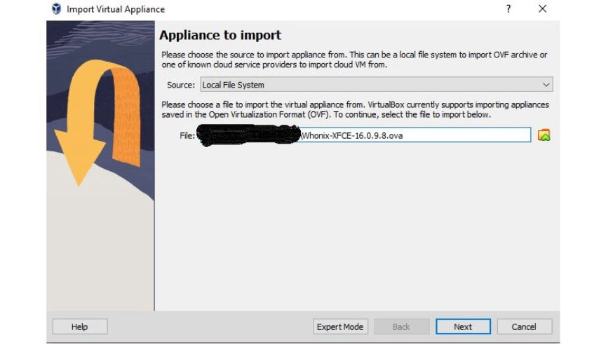
Select Whonix file
Click on "Import" without making any changes.
Next, press "Agree" on the pop-ups that appear and wait for the importation to complete.
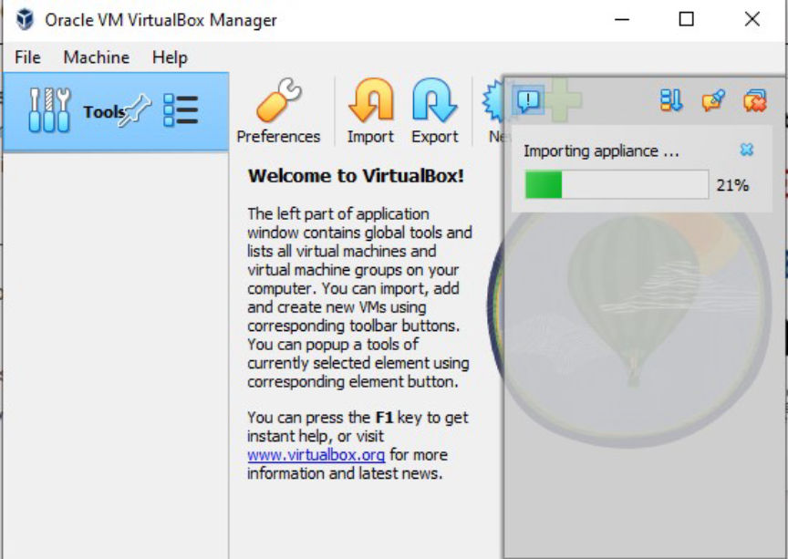Complete Importation/img]
[sub]Start Whonix
To run Whonix you must first start VirtualBox.
Select Whonix-Gateway and click on the "Start" button.
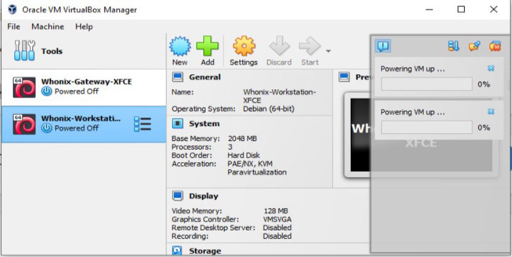
Start Whonix's VMs
Select Whonix-Workstation and click on the "Start" button.
Connect to Tor
After it starts and you accept the terms, the Gateway will ask you to connect to Tor.
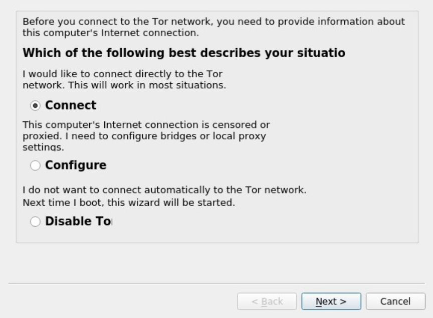
Connect to Tor
Click on Next on the two windows that follow and wait for the connection to complete.
Update the Whonix Gateway
Once Tor starts running a system check will be initiated. Click the OK button on the message that appears after the check.
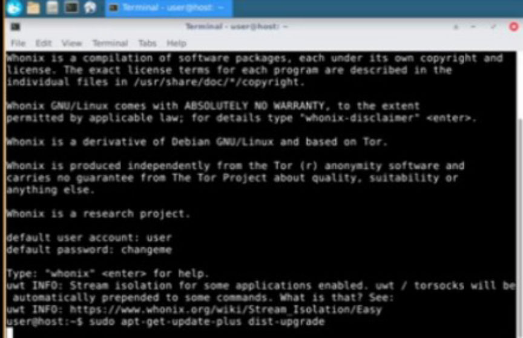
Update through the terminal
Open the Terminal Emulator and type, sudo apt-get update && sudo apt-get upgrade into the terminal and press Enter.
When prompted for a password type, changeme and press Enter.
Update the Workstation
Just as you did at the Gateway, open the Terminal Emulator and type, sudo apt-get update && sudo apt-get upgrade into the terminal and press Enter.
When prompted for a password type, changeme and press Enter.
After the updates are done, reboot the VMs. Always start the Gateway first.
Connect to the Internet
After the gateway has connected to the Tor network, go to the workstation and open the browser.
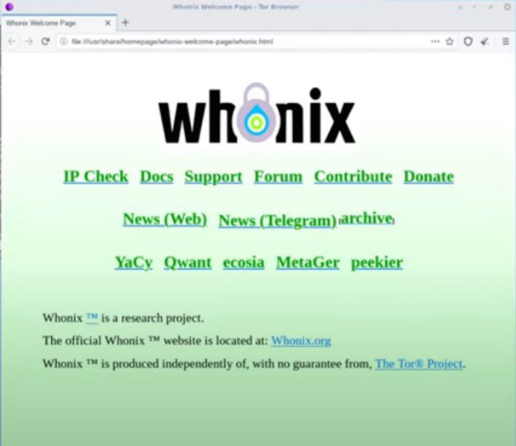
Connected to the internet
Click on the IP Check button to check if the Browser is connected to Tor and your IP is hidden.
The Gateway's functions are to run Tor and act as a firewall. You should carry out all of your activities at the Workstation.
Whonix's basic setup would provide sufficient security to most users. Whonix, however, does not protect you if, your hardware, physical machine, or firmware is compromised, you use weak passwords or fail to use encryption.
For increased security, you may want to harden both Whonix and VirtualBox.
Keep your Gateway and Workstation updated by regularly running system checks.